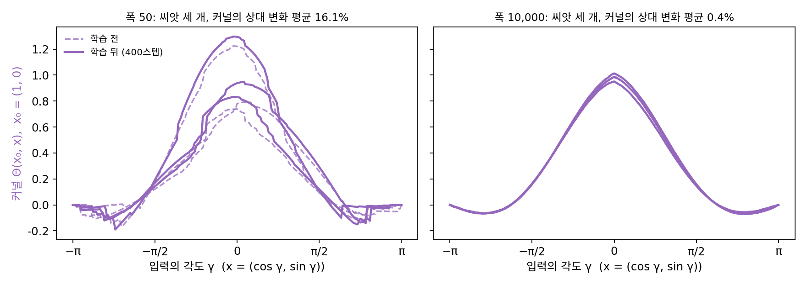
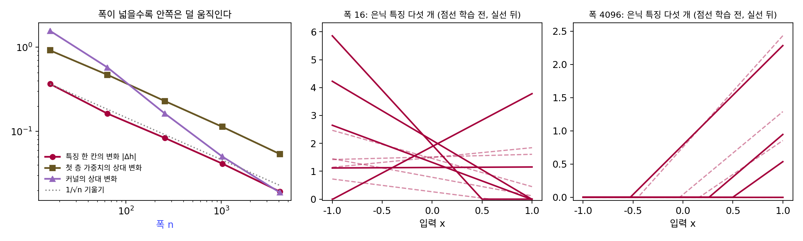
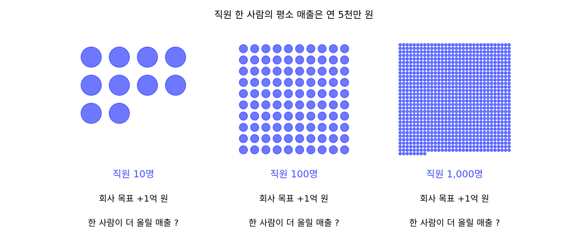
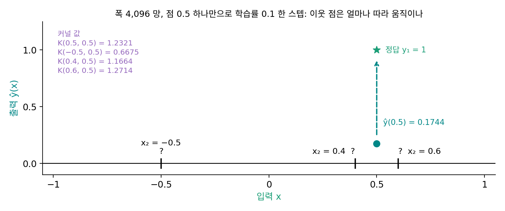
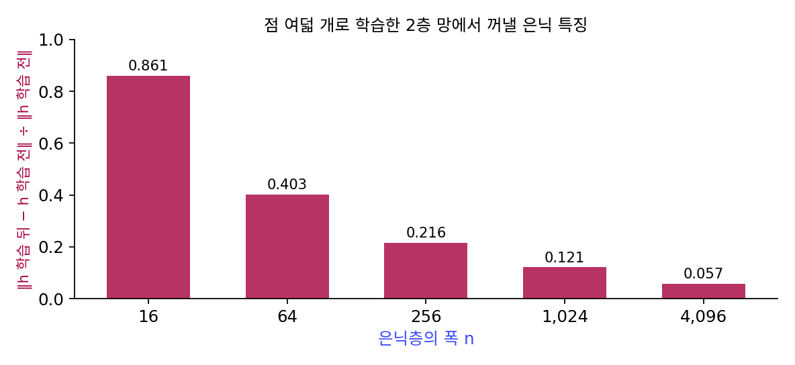

신경 탄젠트 커널: 폭이 무한하면 특징이 움직이지 않는다
폭 n 층 하나에서 학습률을 폭에 반비례로 줄이면 출력의 오차는 폭과 상관없이 한 스텝마다 0.36배로 줄며 정답에 다가갔다. 그런데 그때 가중치 하나하나는 얼마나 움직였을까? 오차를 줄이는 일을 n칸이 나눠 맡으니, 칸 하나가 움직이는 크기는 폭이 넓을수록 작아진다. 실제로 첫 스텝에서 가중치 한 칸의 변화를 처음 가중치의 크기(1/√n)로 나누면 폭 64 에서 8.8%, 256 에서 3.4%, 1,024 에서 1.9%, 4,096 에서 0.9% 다. 폭이 끝없이 넓어지면 가중치 한 칸의 변화는 0 으로 가는데도 출력은 학습되는데, 그런 망은 학습하면서 무엇을 배우고 있을까?
역사: 무한히 넓은 망의 학습을 풀어 쓰다
스위스 로잔 연방공대(EPFL)의 아르튀르 자코(Arthur Jacot), 프랑크 가브리엘(Franck Gabriel), 클레망 옹글레르(Clément Hongler)는 2018년 6월 arXiv 에 논문 하나를 올리고 그해 NeurIPS 에 실었다. 「신경 탄젠트 커널: 신경망의 수렴과 일반화(Neural Tangent Kernel: Convergence and Generalization in Neural Networks)」라는 이 논문에서 그들은 이 극한을 끝까지 풀었다. 그들은 경사하강 동안 망의 출력이 어떻게 바뀌는지를 커널 하나로 적었고, 폭이 무한대로 가면 그 커널이 정해진 극한으로 가며 학습 내내 바뀌지 않는다는 것을 보였다. 학습이 끝나면 어떤 함수가 나올지를 학습을 돌리지 않고 식으로 쓸 수 있게 된 것이다.
같은 해 12월에는 레나이크 시자(Lénaïc Chizat), 에두아르 오이얄롱(Edouard Oyallon), 프랑시스 바크(Francis Bach)가 이 현상에 「게으른 학습」이라는 이름을 붙이고 다른 쪽에서 보았다. 그들의 논문 「미분 가능한 프로그래밍의 게으른 학습(On Lazy Training in Differentiable Programming)」(NeurIPS 2019)에 따르면 이 현상은 파라미터가 많은 신경망에만 있는 것이 아니다. 출력의 크기를 어떻게 맞추느냐는, 흔히 드러나지 않는 선택 때문에 모델이 처음 자리에서의 선형 근사처럼 움직이게 되는 것이다. 이 계열의 연구는 파라미터가 많은 망이 왜 학습 오차를 0 까지 낮출 수 있는지 같은 오랜 물음을 푸는 데 쓰였지만, 한 가지 의심을 남겼다. 그렇게 학습한 망은 정말 우리가 쓰는 신경망처럼 은닉 특징을 배우는가?


학습을 돌리지 않고 결과를 식으로 쓸 수 있다니, 그 전에는 왜 못 했어요? 경사하강은 한 스텝 식이 단순하잖아요.

한 스텝은 단순하죠. 그런데 은닉층이 있으면 그래디언트가 파라미터를 따라 바뀌고 손실도 볼록하지 않아서, 스텝 수천 번을 거친 결과를 닫힌 꼴로 쓸 수가 없었어요.

그럼 폭을 무한대로 보낸 게 그걸 피해 간 우회로였네요. 무한히 넓은 망은 실제로 만들 수도 없는데요.

그래요. 무한 폭에서는 커널이 바뀌지 않으니 학습이 선형 모델의 학습이 되고, 선형 회귀처럼 풀려요. 대신 그 답이 우리가 쓰는 유한한 망과 얼마나 닮았는지는 따로 물어야 했죠.

시자 팀이 짚은 게 그거네요. 출력 크기를 맞추는 방식 하나 때문에 선형 근사처럼 움직인 거라면, 그 방식을 바꾸면 이야기가 달라질 수도 있고요.

폭 4,096 처럼 유한하지만 넓은 망이 정말 무한 폭 쪽에 가깝다면, 학습하는 동안 은닉 특징은 얼마나 움직일까요?
점 여덟 개를 맞추는 2층 망
넓은 망 안쪽에서 무엇이 움직이는지 직접 재 보자. 입력이 숫자 하나 x이고 은닉층의 폭이 n인 2층 ReLU 망을 다음 꼴로 적는다.
−1 과 1 사이에 고르게 놓은 점 여덟 개에서 sin πx를 맞추게 하고, 학습률 0.5 의 경사하강으로 2,000스텝 학습했다. 폭마다 씨앗 다섯 개의 평균이다.
| 폭 n | 학습 뒤 손실 | 첫 층 가중치의 상대 변화 | 은닉 특징 한 칸의 변화 |Δh| | 커널의 상대 변화 |
|---|---|---|---|---|
| 16 | 0.00398 | 0.917 | 0.366 | 1.566 |
| 64 | 0.00124 | 0.470 | 0.163 | 0.575 |
| 256 | 0.00187 | 0.229 | 0.084 | 0.163 |
| 1,024 | 0.00085 | 0.114 | 0.042 | 0.050 |
| 4,096 | 0.00025 | 0.054 | 0.019 | 0.019 |
모든 폭이 점 여덟 개를 잘 맞춰, 손실은 처음의 0.33~0.63 에서 0.004 아래로 내려갔다. 그러나 망 안쪽이 움직인 정도는 폭마다 크게 다르다. 폭 16 에서는 첫 층 가중치가 처음 크기의 92% 만큼 바뀌고 은닉 특징 한 칸이 평균 0.37 움직였는데, 폭 4,096 에서는 가중치가 5.4%, 특징 한 칸이 0.019 움직였을 뿐이다. 폭이 256배가 될 때 특징의 변화는 18.9분의 1이 되었고, 로그 눈금에서 맞춘 기울기는 −0.52 로 1/√n에 가깝다. 폭이 넓을수록 망은 은닉 특징을 거의 그대로 둔 채, 그 특징들을 섞는 비율만으로 답을 맞춘다.
표의 마지막 칸, 커널의 상대 변화가 무엇인지 보자. 점 x′ 하나에서 오차를 줄이려고 한 스텝 가면 다른 점 x의 출력도 함께 움직이는데, 모든 점이 파라미터 θ = (a, w, b)를 함께 쓰기 때문이다. 그 움직임을 1차 근사로 적으면 두 점에서 잰 그래디언트 벡터의 내적이 나온다.
두 입력이 얼마나 비슷한지를 숫자 하나로 돌려주는 함수를 커널이라 부르는데, 여기서는 「한 점을 배울 때 다른 점이 얼마나 따라 움직이나」가 그 비슷함이다. 이렇게 망의 그래디언트 벡터 두 개의 내적으로 정의한 커널을 신경 탄젠트 커널 (한 점을 배울 때 다른 점의 출력이 따라 움직이는 정도 / neural tangent kernel, NTK)이라 한다. 「탄젠트」는 출력을 파라미터에 대해 1차로 근사한 접평면에서 나온 이름이다. 커널이 학습 내내 그대로라면, 망은 처음 자리의 그래디언트 벡터를 고정된 특징으로 삼고 그 위에서 선형 회귀를 하는 것과 같다. 위 표에서 커널의 상대 변화는 폭 16 의 1.57 에서 폭 4,096 의 0.019 로 줄었다. 처음 자리에서 1차 근사한 선형 모델을 같은 학습률로 학습시켜 실제 망과 비교하면, 두 예측의 차이(제곱평균제곱근)도 0.210 에서 0.033 으로 준다. 넓을수록 망은 자기의 선형 근사가 된다.

ML에서: 특징을 배우지 않는 망
넓은 망이 자기의 선형 근사처럼 움직인다는 결과는 파라미터가 데이터보다 많은 망이 왜 학습 오차를 0 까지 낮출 수 있는지를 설명하는 데 큰 힘이 되었다. 그러나 그 대가로 은닉 특징이 처음 무작위 값에 머문다. 양과 휴는 「무한 폭 신경망의 특징 학습(Feature Learning in Infinite-Width Neural Networks)」(2020년 11월 arXiv, ICML 2021)에서 이것을 치명적인 약점이라고 불렀다. 신경 탄젠트 커널의 극한에서는 프리트레인으로 얻은 마지막 층의 특징이 무작위 초기화의 특징과 사실상 같다는 것이다. 그들은 단어를 벡터로 바꾸는 Word2Vec 을 그 극한에서 학습해 미국 도시와 주 이름의 벡터를 그려 보였다. 신경 탄젠트 커널 극한에서 학습한 벡터는 무작위로 흩어졌고, 특징을 배우는 극한에서 학습한 벡터는 넓을수록 도시와 주가 저절로 갈라졌다. BERT 처럼 프리트레인한 특징을 다른 태스크에 옮겨 쓰는 일이 오늘날 딥러닝의 바탕이니, 특징을 배우지 않는 극한은 실제 신경망의 모델로 모자란다.
문제 4. 직원이 많은 회사의 목표
회사가 올해 매출 목표를 1억 원 올리기로 하고, 직원 모두가 똑같이 나눠 맡는데, 직원 한 사람이 평소 올리는 매출은 연 5천만 원이다. (가) 직원이 10명, 100명, 1,000명일 때 한 사람이 더 올려야 할 매출은 얼마이고, 그것은 평소 매출의 몇 %인가? (나) 1,000명인 회사에서 「올해 일하는 방식이 바뀌었다」고 느끼는 직원이 있겠는가? (다) 회사 전체로 보면 무엇이 바뀌었는가?

이서연: (가)는 1억을 나누면 되니까 10명이면 1,000만 원으로 평소의 20%, 100명이면 100만 원으로 2%, 1,000명이면 10만 원으로 0.2%예요.1,000명이면 한 사람에게는 거의 티가 안 나겠네요. 1년에 10만 원이면 일하는 날마다 몇백 원어치 더 파는 정도니까요. 그래도 회사 전체 매출은 직원 수와 상관없이 목표대로 1억이 늘고요.
10명 회사는 사람마다 20%씩 바꿔야 하니까 일하는 방식 자체가 달라질 거야. 새 거래처를 뚫든가. 1,000명 회사는 다들 하던 일을 조금씩 더 하는 것만으로 목표를 채우고. 회사가 새 방법을 배운 건 10명 회사 쪽이네.

그래요. 넓은 망도 같아요. 출력은 목표만큼 바뀌는데, 그 일을 은닉 뉴런 수천 개가 나눠 맡으니 뉴런 하나의 값은 거의 바뀌지 않아요. 하던 일을 그대로 하면서 섞는 비율만 조금 바꾸는 거죠.
문제 5. 한 점을 배우면 이웃 점은
폭 4,096 인 위의 2층 망(씨앗 0)이 학습 전 상태다. 점 x₁ = 0.5 의 출력은 ŷ(0.5) = 0.1744 이고, 정답은 y₁ = 1 이다. 이 점 하나의 손실 ½(ŷ(x₁) − y₁)²만으로 학습률 0.1 의 경사하강을 한 스텝 간다. 커널 값은 K(0.5, 0.5) = 1.2321, K(−0.5, 0.5) = 0.6675, K(0.4, 0.5) = 1.1664, K(0.6, 0.5) = 1.2714 다. (가) x₁ 의 출력은 얼마나 움직이는가? (나) x₂ = −0.5, 0.4, 0.6 의 출력은 각각 얼마나 따라 움직이는가? (다) 배운 점보다 더 많이 움직인 이웃이 있다면 왜 그런가?

이서연: (가)는 −0.1 × 1.2321 × (0.1744 − 1) = +0.1017이야. (나)는 식에 넣기 전에 짐작해 보면, 커널이 두 점이 얼마나 비슷한지를 재는 거니까 0.5에 가까운 0.4와 0.6은 0.1017보다 조금씩 덜 움직이고, 1만큼 떨어진 −0.5는 거의 안 움직일 것 같아. 가우시안 커널처럼 멀수록 0에 가까워질 테니까.한 스텝 실제로 가 봤어. 0.5는 +0.1017로 넷째 자리까지 같고, 이웃은 −0.5가 +0.0552, 0.4가 +0.0964, 0.6이 +0.1050이야. 커널 값을 식에 넣은 +0.0551, +0.0963, +0.1050과도 맞고.

−0.5가 배운 점의 절반 넘게 움직였네. 0.6은 오히려 배운 점보다 더 움직였고. 아, K(0.6, 0.6) = 1.3533 이 K(0.5, 0.5) = 1.2321 보다 크네. 점 0.6은 그래디언트 벡터 자체가 더 길어서, 0.5 쪽과 조금만 같은 방향이어도 내적이 커지는 거야. 커널은 「가까운가」만이 아니라 「얼마나 민감한가」까지 곱해진 값이구나.
그럼 −0.5 는요? 입력으로는 1 만큼 떨어졌는데 비 K₂₁/K₁₁ 이 0.542 나 되죠.
멀리 떨어졌는데도 같이 움직였으니까… 두 점이 무언가를 공유하는 거겠죠?
두 점의 그래디언트가 같은 쪽을 향하려면, 은닉 뉴런 쪽에서 무엇이 같아야 할까요?
같은 뉴런이 켜져 있어야… 아, 뉴런마다 wᵢx + bᵢ 가 양수인 구간이 넓어서, 0.5 와 −0.5 가 같이 켜 있는 뉴런이 많은 거예요.
함께 켜진 뉴런으로는 한쪽을 배우면 다른 쪽도 따라 움직이겠네.

그럼 이 망에서 「비슷하다」는 건 입력 사이의 거리보다 같은 뉴런을 함께 켜는지로 정해지는 거네요. 선형대수에서 그람 행렬 성분이 두 벡터 길이와 사잇각을 함께 담던 거랑 같아요.
학습하면서 이 비율들이 거의 안 바뀐다는 게 폭이 넓을 때의 이야기였죠. 그러면 학습 전에 커널만 계산해 두면 어떤 함수가 나올지 미리 알 수 있겠네요.
문제 6. 프리트레인한 특징을 꺼내 쓰기
위의 2층 망을 점 여덟 개로 학습한 뒤, 은닉층 값 h(x)를 꺼내 다른 태스크의 입력으로 쓰려 한다(학습한 특징을 옮겨 쓰는 전이 학습). 은닉 특징 행렬 전체가 학습 전보다 얼마나 바뀌었는지(‖h학습 뒤 − h학습 전‖ ÷ ‖h학습 전‖)를 재면 폭 16 에서 0.861, 64 에서 0.403, 256 에서 0.216, 1,024 에서 0.121, 4,096 에서 0.057 이다. (가) 폭 4,096 망에서 꺼낸 특징은 학습 전의 무작위 특징과 얼마나 다른가? (나) 학습 손실은 폭 4,096 이 가장 낮았다(0.00025). 그렇다면 폭 4,096 망의 특징이 가장 쓸모 있다고 할 수 있는가? (다) 폭을 넓히면서도 특징이 배워지게 하려면 무엇을 바꿔야 하겠는가?

김민준: (가)는 5.7% 만 바뀌었어요. 그래도 (나)는 손실이 가장 낮으니까 가장 잘 배운 망이고, 특징도 가장 좋겠죠.학습하지 않은 망의 은닉층을 꺼내 쓰는 것과 비교하면 어떤가요?

94% 넘게 같으니까… 학습 전 망을 그냥 꺼내 쓰는 거랑 거의 같네요. 손실은 낮은데 특징은 안 배웠어요. 출력층 가중치가 무작위 특징을 잘 섞어서 맞춘 거고요.
폭 16 은 특징이 86% 나 바뀌었어. 손실은 0.004 로 더 높지만, 은닉층이 이 태스크(sin πx 맞추기)에 맞게 모양을 바꾼 거야. 옮겨 쓸 거리가 있는 건 폭 16 망이지.
(다)는 어떻게 할까요? 넓은 망에서 특징이 덜 움직인 건 무엇 때문이었죠?
출력에 1/√n을 곱하고 모든 층에 같은 학습률을 썼으니까… 출력을 맞추는 데 필요한 변화가 은닉 뉴런 수천 개로 나뉘었어요. 문제 4의 1,000명 회사처럼요.
그럼 무엇을 폭에 맞춰 바꿔야 할까요?
층마다 초기화와 학습률을 따로 정해서, 특징 한 칸이 움직이는 크기가 폭과 상관없게 해야겠어요. 극한에서 0 으로 가는 수열에 √n을 곱해 0 이 아닌 극한을 만드는 것처럼 크기를 다시 맞추는 거죠.
그럼 손실만 보고 좋은 망을 고르면 안 되겠네. 특징이 얼마나 움직였는지를 따로 재 봐야 하고.
운동 기구가 무게를 거의 다 받쳐 주면 들어 올린 기록은 잘 나와도 근육은 안 붙는 거랑 같네. 기록이 손실이고 근육이 특징이야.